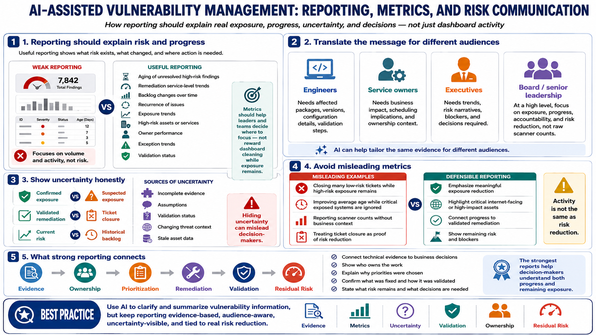

Metrics, Reporting, and Communication
Connecting to LMS... Progress: in progress

Narration
Vulnerability management reporting should explain risk and progress, not only ticket volume. Useful metrics may include aging of unresolved high-risk findings, remediation service-level trends, backlog changes, recurrence, exposure trends, high-risk assets, owner performance, exception trends, and validation status. Metrics should help leaders and teams decide where to focus, not reward behavior that makes dashboards look clean while exposure remains.
AI can help translate technical findings for different audiences. Engineers may need affected packages, versions, configuration details, and validation steps. Service owners may need business impact and scheduling implications. Executives may need trends, risk narratives, blockers, and decisions required. Board-level communication at a high level should focus on exposure, progress, accountability, and risk reduction rather than raw scanner counts.
Reports should include uncertainty when appropriate. Some findings depend on incomplete evidence, assumptions, validation status, changing threat context, or asset data that may be stale. Hiding uncertainty can mislead decision-makers. Clear reporting distinguishes confirmed exposure from suspected exposure, validated remediation from ticket closure, and current risk from historical backlog.
AI-assisted reporting should avoid misleading metrics. Closing many low-risk tickets is not the same as reducing meaningful risk. A dashboard that ignores critical exposed systems is not healthy because the average age improved. The strongest reports connect evidence, ownership, prioritization, remediation, validation, and residual risk so decision-makers understand both progress and remaining exposure.